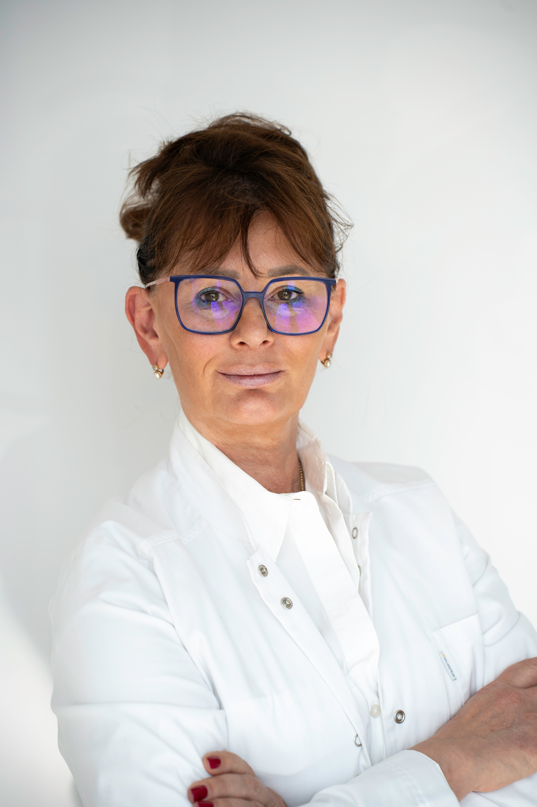

Dr n. Med. Aleksandra Szczęśniak-Chmielecka
Specjalistka ginekologii i położnictwa z ponad 25-letnim doświadczeniem.

O lekarzu
Członkini Polskiego Towarzystwa Ginekologicznego. Odbywała staż w Ropcke-Zweers Ziekenhuis w Holandii oraz pracowała w polskiej przychodni w Dublinie.
Doświadczenie kliniczne
Wieloletnia członkini kadry medycznej Wojewódzkiego Szpitala w Poznaniu oraz Ginekologiczno-Położniczego Szpitala Klinicznego UM w Poznaniu. Uczestniczka licznych międzynarodowych konferencji.
Zakres usług
- Konsultacje ginekologiczne i profilaktyka
- Prowadzenie ciąży fizjologicznej
- Diagnostyka ultrasonograficzna (USG)
- Leczenie zaburzeń hormonalnych
- Ginekologia operacyjna i ambulatoryjna
Kontakt
E-mail:
kontakt@dlaniej.poznan.pl
Telefon:
+48 123 456 789
Wizyty można umawiać telefonicznie lub poprzez portal ZnanyLekarz.
Godziny przyjęć
- Poniedziałek: 09:00 - 15:00
- Wtorek: 12:00 - 18:00
- Środa: 09:00 - 15:00
- Czwartek: 12:00 - 18:00
- Piątek: 09:00 - 14:00